Powering screens of all sizes
Yayasan Dharma Bhakti Sosial Provinsi Bengkulu adalah
memberikan pelayanan
terhadap penyandang cacat berbagai keterampilan, bimbingan sosial dan
kesiapan kemandirian anak melalui pendidikan baik formal maupun non formal
agar dapat memenuhi kehidupan, layaknya sebagai masyarakat umum.
4
The best of Google built in
ydbks works perfectly with your favourite apps like Google Maps, Calendar and YouTube.
Kenapa Donasi ke Yayasan Dharma Bhakti Sosial Provinsi Bengkulu?
Put the stuff that you care about right on your home screen: the latest news, the weather or a stream of your recent photos.
Artikel


Create your own ydbks character
Turn the little green ydbks mascot into you, your friends, anyone!

Get a clean customisable home screen
A clean, simple, customisable home screen that comes with the power of Google Now: Traffic alerts, weather and much more, just a swipe away.